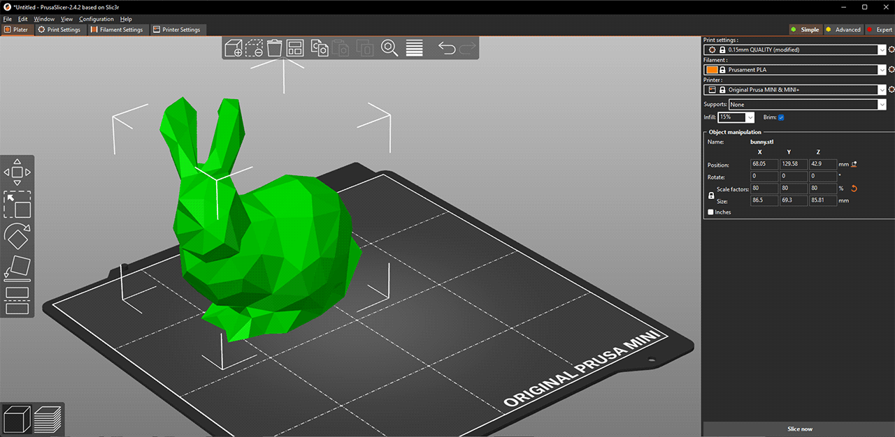

Impresora 3D Prusa MK4S
Introducción
La Prusa MK4S es una de las impresoras 3D más recomendadas para principiantes y entornos educativos.
Combina facilidad de uso, confiable y da excelentes resultados gracias a su sistema de autonivelación automática, su asistente de calibración inteligente y el software PrusaSlicer.
Desde el primer encendido, guía al usuario paso a paso evitando errores comunes. Su funcionamiento es silencioso, su mantenimiento sencillo, y su comunidad muy activa, lo que facilita resolver dudas y aprender rápidamente.
Materiales compatibles
| Material | Descripción | Temp. boquilla / cama | Dificultad | Recomendado para |
|---|---|---|---|---|
| PLA | Ideal para principiantes, biodegradable y fácil de imprimir | 200 °C / 60 °C | Fácil | Figuras, prototipos, piezas decorativas |
| PETG | Resistente, flexible y duradero | 240 °C / 85 °C | Media | Piezas funcionales y exteriores |
| ABS | Resiste altas temperaturas, puede deformarse sin cámara cerrada | 250 °C / 100 °C | Difícil | Piezas estructurales y mecánicas |
| ASA | Similar al ABS, pero más estable frente a rayos UV | 255 °C / 100 °C | Difícil | Piezas exteriores |
| TPU | Material elástico y flexible | 230 °C / 60 °C | Media | Protectores, juntas, fundas |
| Nylon | Muy resistente y duradero | 260 °C / 90 °C | Difícil | Engranajes, bisagras, componentes técnicos |
| PC(policarbonato) | Alta resistencia al impacto y al desgaste (menor que al PETG) | 270°/ 110° | Media | Componentes técnicos |
| PVB | Filamento transparente y resistencia a la tracción | 215°/75° | Difícil | Pantallas de lámpraras y joyería |
Consejo: si estás comenzando, imprime con PLA. Es económico, seguro y no requiere una cabina cerrada.
Componentes principales de la Prusa MK4S
Componentes enumerados:
- Carrete de filamento
- Marco
- Eje Z
- Nextruder - Sensor de carga que mejora la precisión
- Motor paso a paso del eje x
- Caja electrónica - Se accede a lo puertos Ethernet y Wi-fi desde atrás
- Motor paso a paso del eje Z
- LCD
- Portacarrete
- Eje X
- Fuente de alimentación
- Lámina de impresión
- Cama caliente
- Puerto USB
- Perilla giratoria
Software de laminado: PrusaSlicer
El programa PrusaSlicer convierte los modelos 3D en instrucciones que la impresora entiende, llamadas G-code.
Interfaz de Prusa Slicer
- Abre las opciones de "Print", "Filament" y "Printer sttings"
- "Add" sirve para importar modelos en 3D
- El botón de "Delete" sirve para borrar los modelos que esten en la interfaz
- Sirve para cambiar entre modos "Simple", "Avanzado" y "Experto"
- Configuraciones para velocidad y calidad
- Seleccionar el material
- Seleccionar la impresora
- Configurar "Infill", "Supports" y "Brim"
- Información sobre el tamaño del modelo y el tiempo de duración de la impresión (Después de sleccionar "Slice")
- Slice
- Clic derecho sobre el modelo para abrir nu menú sobre información
- Modelar la prevista en 3D
- Cambiar entre el editor 3D y el modo de prevista
- "Move", "Scale", "Rotate", "Cut", "Paint-on-supports" y "Seam Painting Tools"
Pasos básicos
- Abre PrusaSlicer.
- Selecciona Original Prusa MK4S como impresora.
- Carga tu modelo 3D (
Archivo > Importar > Modelo STL). - Ajusta su posición y orientación con Move, Rotate, y Scale.
- Configura los parámetros principales:
- Material: PLA recomendado para iniciar
- Altura de capa: 0.20 mm (estándar)
- Relleno: 20 %
- Soportes: Solo si hay partes que "vuelan" o huecos grandes
- Infill: Tipo de relleno geometrico que sea de nuestro agrado
- Brim: Para incrementar la adherencia del modelo sobre la primera capa
- Selecciona Slice Now para generar el archivo.
- Guarda el
.gcodeen una memoria USB.
Dato técnico: el archivo G-code contiene coordenadas (X, Y, Z), temperatura y flujo de extrusión para cada capa.

Seleccionar el color para la impresión
- Seleccionar la prevista
- Utilizar el controlo deslizante para seleccionar en que capa de la impresión quieres modificar el color
- Dar clic en el icono de "+" naranja
- Aparecerá una vista previa de cómo se verá el color, si lo quieres deshacer da clic en el botón gris que aparecerá en vez del naranja
- Exportar el .gcode para imprimir
Pantalla táctil
1.- Print
Cuando se selcciona está opción lo que muestra son todos los archivos que están guardados en la USB que esta conectada, si no hay USB note dejara seleccionar la opción
2.- Preheat
Aquí se abre un menú en donde podemos seleccionar el tipo de material que vamos a usar y la impresora automaticamente se calentara de acuerdo al material seleccionado
3.- Filament
Aquí se muestran las opciones que nos da el botón de "Filament", las cuales se autoexplican
4- Control
Aquí se muestran varias elecciones para manipular varios factores de la impresora como el movimiento de los ejes
5.- Settings
Permite controlar y personalizar el comportamiento de la máquina a un nivel más profundo
Aquí se muestran algunas de las opciones
6.- Info
Aquí se nos proporciona toda la información de los detalles sobre la impresora
Preparación y calibración inicial
- Enciende la impresora y espera que cargue el menú principal.
- Dirígete a Settings > Calibration > Selftest.
- El sistema verificará:
- Movimiento de los ejes (X, Y, Z)
- Sensor de filamento
- Calibración del extrusor y de la cama calefactora
- Si todo está correcto, mostrará Selftest Passed.
No es necesario nivelar manualmente la cama.
La MK4S usa sensores de carga y un sistema de calibración automática (Load Cell) que mide la presión real de contacto.
Cargar o cambiar el filamento
- Menú > Filament > Load Filament.
- El extrusor calentará la boquilla automáticamente.
- Corta la punta del filamento de modo que qude un poco afilado
- Inserta el filamento y deja que el motor lo guíe.
- Espera a que salga un flujo uniforme.
- Para cambiar material: Unload Filament → luego carga el nuevo.
- Corta el exceso de material antes de iniciar la impresión.
Precaución: nunca toques la boquilla caliente (puede superar los 250 °C).
Iniciar una impresión
- Inserta la memoria USB con el archivo
.gcode - Menú > Print > selecciona el modelo
- La impresora precalienta la cama y la boquilla automáticamente
- Observa la primera capa: debe verse uniforme y bien adherida
- Si el filamento no se adhiere, ajusta con Live Z Adjust
La MK4S tiene la función de Input Shaper, un sistema que reduce vibraciones y mejora la calidad de impresión a altas velocidades.
Retirar la pieza impresa
- Espera a que la temperatura de la cama baje a menos de 35 °C.
- Retira la hoja magnética y flexiónala suavemente.
- Usa una espátula con cuidado si la pieza está muy adherida.
- Limpia la cama con alcohol isopropílico antes de la siguiente impresión.
Mantenimiento básico
- Limpia la boquilla con aguja o cepillo de latón.
- Lubrica varillas y husillos cada 3 meses.
- Mantén los ventiladores libres de polvo.
- Guarda el filamento en bolsas con desecante.
- Actualiza el firmware desde help.prusa3d.com.
Resolución de problemas comunes
| Problema | Posible causa | Solución |
|---|---|---|
| Primera capa no se adhiere | Cama sucia o mal calibrada | Limpia la cama y ajusta el eje Z |
| No sale filamento | Boquilla obstruida | Calienta y limpia o reemplaza la boquilla |
| Filamento quebradizo | Humedad o mala calidad | Usa filamento seco y revisa el tubo guía |
| Capas desplazadas | Correas flojas o atascos | Ajusta correas y verifica los ejes |
| Impresión detenida | Fallo de energía o USB defectuosa | Usa otro dispositivo o la función Resume Print |
Recomendaciones finales
- Inicia con modelos simples como el 3DBenchy o un cubo de calibración.
- No apagues la impresora hasta que se enfríe por completo.
- Mantén el área de trabajo limpia y bien ventilada.
- Aprende nuevos perfiles de impresión en Printables.com.
Conclusión
La Prusa MK4S permite a cualquier persona iniciarse en la impresión 3D sin complicaciones.
Su diseño inteligente, sensores avanzados y software intuitivo hacen que el aprendizaje sea fluido y confiable.
Con práctica y curiosidad, podrás dominar las técnicas de impresión, calibración y diseño 3D desde los primeros proyectos.